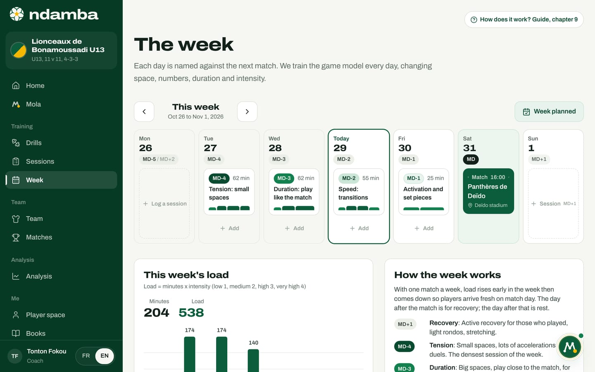

Why Africa can win the World Cup
The facts of Cameroonian and African football, what is still missing to climb the last step, why a shared tool like Ndamba answers that gap, and the three World Cups of the window, in 2030, 2034 and 2038.
9 min read
Ndamba carries an ambition best stated plainly: that an African nation, Cameroon first, lifts the World Cup trophy within the next fifteen years, in 2030, 2034 or 2038. A sentence like that convinces nobody if it stays a slogan. This chapter is written first for investors, federations and leagues. It sets out the facts, checked on October 29, 2026, without polishing them. It says what, in our view, is still missing to climb the last step. It explains why a tool like Ndamba answers that gap. And it says what Ndamba does not promise.
What Cameroon has already proved
The record of the Indomitable Lions fits in a few lines, and every one of them is a source of pride.
| Landmark | The fact |
|---|---|
| World Cups played | 8, the African record: 1982, 1990, 1994, 1998, 2002, 2010, 2014, 2022 |
| Best World Cup result | Quarter-final in 1990, in Italy, the first African quarter-final |
| Africa Cup of Nations | 5 titles: 1984, 1988, 2000, 2002, 2017 |
| Olympic Games | Gold medal in Sydney, in 2000 |
| Confederations Cup | Runner-up in 2003 |
The summer of 1990 left an image the whole continent knows: Roger Milla, aged 38, scoring four goals and dancing at the corner flag. That image has crossed generations. In the novel Lionceaux, Papa shows it to his sons, and Kaydoudou repeats the dance after every goal.
And yet Cameroon was not at the 2026 World Cup, the first with 48 teams. Second in its qualifying group behind Cape Verde in October 2025, it was beaten 1-0 by DR Congo in stoppage time of the African play-off semi-final, in Rabat, on November 14, 2025. A single goal, at the very end of a match, kept out of the tournament the African nation with the most appearances.
What Africa has already proved
No African nation has ever won the World Cup. The continent’s best result is Morocco’s semi-final in 2022, in Qatar, which ended in fourth place. In 2026, in the United States, Canada and Mexico, Morocco was the last African team standing: it was beaten 2-0 by France in the quarter-final. Spain won the final 1-0 after extra time against Argentina, on July 19, 2026. Le Code Njangi (The Njangi Code) opens on that very final.
Morocco showed something precious: a semi-final, then a quarter-final four years later. The top level can be repeated, not just touched once. The last step is still to be climbed: no African nation has yet played in a final.
What these facts say
Three readings stand out, and all of Ndamba rests on them.
Talent is not the question. A country that wins continental titles over more than thirty years, from 1984 to 2017, takes Olympic gold and holds the African record for appearances produces top-level footballers, generation after generation.
What is missing is consistency. Cameroon’s best World Cup result dates from 1990 and has not been bettered since; in 2026, its absence came down to one goal. The great moments exist, but they look more like peaks than like a staircase being climbed.
What lasts eventually shows. The best African run in history, in 2022, was followed in 2026 by another quarter-final from the same nation.
This is a reading, not a statistic: we do not claim to explain every match, its injuries or its refereeing decisions. But the thesis is clear. What Africa lacks is not talent. It is continuity.
What is missing: continuity
One game model, from the first academy to the national team
A game model is the written description of what the team does in each moment of the match, translated into behaviours you can see, train and measure. If the academy, the club, the U15, the U17, the U20 and the senior team each play their own way, the player relearns football at every stage, and the national coach brings together players who have never played the same score. An idea written nowhere leaves with the coach who carries it.
Coaches educated in that model
A model only exists if it is taught, with the same words, by hundreds of educators. The day an 11-year-old and a 27-year-old international say "Fixer" (Pin) and mean exactly the same thing, a federation has already won something.
A common measure
Without a common measure, nobody can check. Possession percentage says how long a team had the ball, not what it did with it. A federation needs a number that tells it, season after season and from one age group to the next, whether its players really possess with purpose.
Data that follows the player
When a player’s history (sessions, matches, evaluations, objectives) stays in one educator’s notebook, it is lost at the first change of club or coach. To follow a generation for fifteen years, that history has to follow the player.
The diaspora
Some of the young people who could wear the national shirt grow up far from their parents’ country. Spotting them early, speaking to them with respect and bringing them into the same game model is a project in its own right. The novel Lionceaux makes it its subject: two Cameroonian brothers growing up in the United States, France, Spain and England.
Why Ndamba answers that gap
Ndamba is a continuity tool: the same model, the same words and the same measure, from the youngest player to the senior team. Here is what exists today, and what remains to be done.
| What is missing | What Ndamba brings today | What remains to be done |
|---|---|---|
| One game model | Le Code Njangi, free to read, and the same seven words throughout the app: Build out, Progress, Pin, Finish, Breathe, Win it back, Look forward | Adoption by clubs, a league, then a federation: these are targets (chapter 23) |
| Educated coaches | 64 drill cards, sessions, a week organised around the match, and Mola to prepare the week; the books and drills are never locked behind a subscription | Coach education modules and the first certified Njangi coaches: planned |
| A common measure | The Njangi Index, computed live from fourteen codes, with the same formula in the book and the app, and the same scale from U13 to seniors | Reference values by age, built from coded matches: a target |
| Data that follows the player | The player file, the journey, the grid of ten skills rated 1 to 4, the observations | Accounts and sync: planned; today the data stays on the device and is backed up by hand |
| The diaspora | A platform in French and English, in a plain web browser, wherever you live | Scouting the diaspora with the youth national teams: a target of the 2030 stage |
| The youngest | The novel Lionceaux and its 40 Ball Lessons, in the same words as the method book | Books 2 to 6: planned |
The common measure shows in the two demos. The U13 Lionceaux de Bonamoussadi score 63.7 against the Requins de Bépanda, "Njangi in progress". The seniors of Étoile de la Côte score 67.9 against Météore de Bafoussam, "Solid Njangi". This is demo data, but the five sub-indices, the reading scale and the formula are the same. Le Code Njangi reminds you to compare a team with itself first, and that an under-15 national team will normally sit lower than a senior team. For a federation, that is exactly the point: the same thermometer on every floor of the pyramid.


Continuity also shows in the week and in the journey. The U13 week follows the same logic as the senior week, MD-4 Tension, MD-3 Duration, MD-2 Speed, MD-1 Activation, with a load suited to age. And a player’s journey gathers, season after season, sessions, matches, observations, evaluations and objectives.



What this changes, in practice
Take an example, imagined for illustration. A 12-year-old boy joins an academy that works with Ndamba in 2026. His educator plans the week with the book’s drill cards, codes matches from the touchline and reads the team’s Njangi Index, comparing it from one match to the next. The player’s file keeps his sessions, matches, observations and evaluations of the ten skills. If he later joins a club, then a youth national team that follow the same method, his new coach speaks the same words, offers him the same drills and reads the same Index. Nothing has to be relearned; everything can be deepened. For his history to really follow him from one structure to the next, accounts and sync are needed, and they are planned.
Three World Cups in the window
The window from 2026 to 2041 holds three World Cups:
- 2030: Morocco, Spain and Portugal, with three centenary matches in Uruguay, Argentina and Paraguay. An African country co-hosts the tournament.
- 2034: Saudi Arabia.
- 2038: not yet awarded as of October 2026.
There is also a yearly meeting for young players: since 2025, the U-17 World Cup has been played every year, with 48 teams, hosted in Qatar from 2025 to 2029. Each edition is a test bench for a national game model.
The players of those three tournaments are already born.
| Age in 2026 | In 2030 | In 2034 | In 2038 |
|---|---|---|---|
| 12 | 16 | 20 | 24 |
| 16 | 20 | 24 | 28 |
A 12-year-old who joins an academy today is 20 in 2034 and 24 in 2038. BriBri and Kaydoudou, the heroes of the novel, are 12 and 10 in 2026: they would be 20 and 18 in 2034, 24 and 22 in 2038.
A word on the mantra. The app and the cover of Le Code Njangi say "2030 or 2034". This guide speaks of the next fifteen years, which also include 2038. The ambition does not change; the window says honestly how long it takes a generation to grow up in one game model.
Chapter 23 sets out the path in five stages, with proposed targets rather than results: the first circle (2026 to 2027), the league (2028 to 2029), the youth national teams (2030), the generation (2031 to 2034, targeting a quarter-final or better in 2034) and the trophy (2035 to 2041, targeting the trophy in 2038).
What Ndamba does not promise
- No tool wins a World Cup. Players, coaches, federations, health, school and organisation win it. Ndamba makes continuity possible and visible.
- No partnership is signed today. Whenever this guide mentions a federation, a league or a pilot club, it describes a goal.
- The reference values of the Njangi Index are internal benchmarks of the method, to be calibrated on your own matches; they are not averages of world football.
- Today, the data lives in the device’s browser, with no account or sync, and payments are not connected yet (chapters 24 to 26).
The rest depends on what we do together between now and then. Ndamba’s motto says it in two sentences: "The ball must travel. But it must know where it is going."